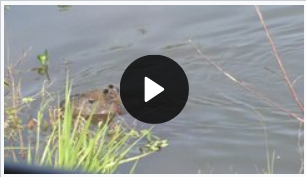
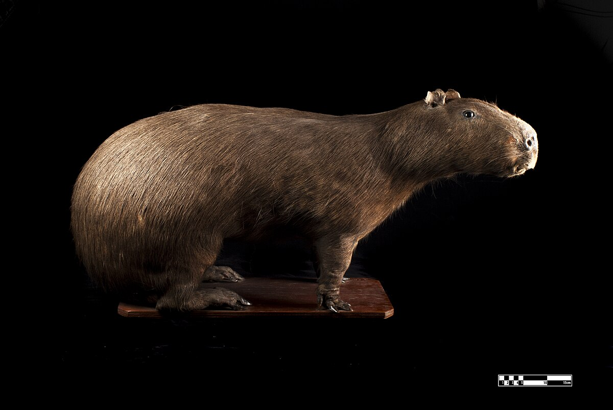
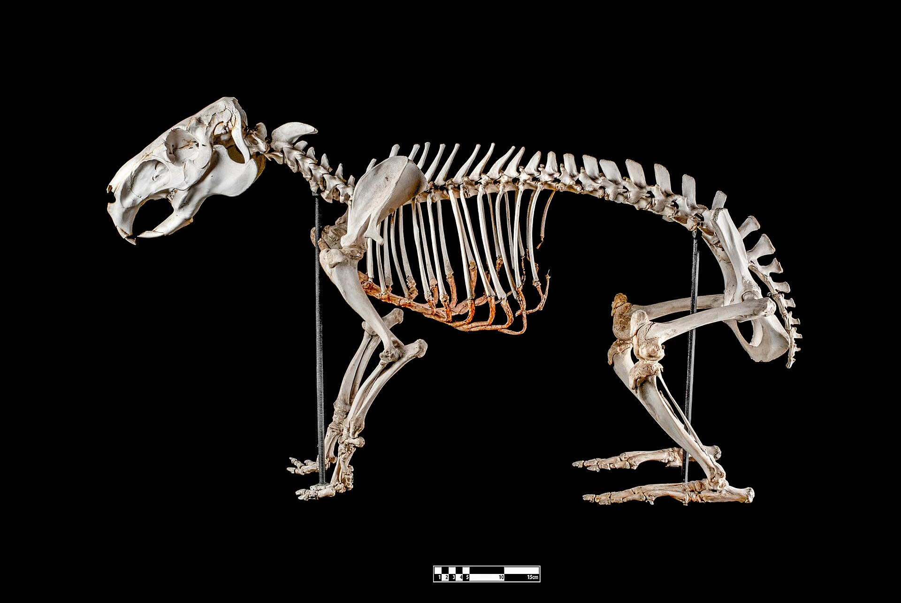
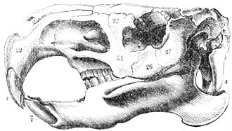

El capibara, carpincho, chigüire, chigüiro, (Hydrochoerus hydrochaeris) es una especie de roedor de la familia de los cávidos, nativa de Sudamérica. Se trata del roedor viviente de mayores tamaño y peso del mundo.
El otro miembro existente de este género es el capibara menor (Hydrochoerus isthmius). Sus parientes cercanos incluyen a los conejillos de indias y los mocós, y está relacionado más lejanamente con el agutí, la chinchilla y el coipo. Habita humedales y bosques densos y vive cerca de masas de agua. Es una especie muy social y se puede encontrar en grupos de hasta cien individuos, pero por lo general vive en grupos de diez a veinte individuos. El animal es cazado por su carne, piel (para indumentaria) y por la grasa contenida en su piel.
Nombre común
Uno de sus nombres comunes, capibara, proviene del guaraní kapiÿvá o kapiÿva, que significa 'señor del pasto' o 'comedor de pasto', respectivamente. En la lengua tupí, el término es ka'apiûara, que significa 'el que come hojas delgadas', o 'comedor de hierba'.
Las palabras que componen el nombre científico, tanto hydrochoerus como hydrochaeris, vienen del griego antiguo: ὕδωρ (hýdōr «agua») y χοῖρος (choíros «cerdo»), viniendo a significar 'cerdo de agua'.
Suele denominarse de muchas maneras que varían según el país o la región
Descripción.
Tiene un cuerpo pesado en forma de barril y una cabeza pequeña, con un pelaje pardo rojizo en la parte superior del cuerpo que se vuelve pardo amarillo. Puede crecer hasta 1,30 m de largo y llegar a pesar 65 kg. Presenta pies ligeramente palmeados, y de manera similar a otros cávidos, carece de cola y cuenta con veinte dientes. Sus patas posteriores son algo más largas que las anteriores, y los hocicos son romos, con ojos, narinas y orejas en la parte superior de la cabeza. Las hembras son ligeramente más pesadas que los machos.
Cuerpo y pelaje.
El cuerpo, que carece de cola, es de forma maciza y redonda, con el tronco grueso y cuatro patas cortas. Las patas anteriores tienen cuatro dedos y las posteriores tienen tres, expuestos en manera radial. Los dedos gruesos y parecidos a pezuñas presentan unas pequeñas membranas que los unen interdigitalmente. Los capibaras alcanzan una longitud de 1 a 1,30 m y una altura a la espalda de 50 a 60 cm; las hembras suelen ser un poco más grandes que los machos. El peso medio es de 50 kg en los machos y 61 kg en las hembras; sin embargo, el peso real puede variar entre 27 y 65 kg. El extinto "Neochoerus sulcidens" era significativamente más grande.
El pelaje es largo y áspero, pero en algunas partes es tan fino que se puede apreciar la piel a través de él. Esto hace que sean unos animales propensos a las insolaciones, y para evitarlo, se revuelcan en el barro para protegerse la piel del sol.[29] La coloración va de un pardo rojizo al gris en la parte superior, mientras que la parte inferior tiene un color pardo amarillo. Algunos ejemplares tienen manchas negras en la cara, en el lado exterior de las patas y en la parte trasera. La longitud del pelo va de 30 a 120 mm.
 Cabeza y dentadura.
Tienen una cabeza notablemente ancha y grande. En relación con los parientes más próximos al capibara, el hocico es más grande y redondeado, mientras que las narinas son pequeñas y están bastante separadas. En los ejemplares machos, la punta del hocico está calva y dotada de una prominencia
correspondiente a la glándula olfativa. Las orejas son pequeñas y redondas, mientras que los ojos se encuentran situados en los lados y también son pequeños. Como en muchos animales que tienen un estilo de vida parcialmente acuático, los ojos, las orejas y las narinas del carpincho se encuentran situados en la parte superior de la cabeza, de manera que cuando salen a respirar del agua o a observar lo que les rodea, casi no sobresalen de la superficie.